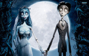
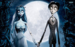

Trabalhando com diversos elementos
Filmes do Tim Burton
 Beetlejuice em Os fanstasmas se divertem!
Beetlejuice em Os fanstasmas se divertem!
Subir ▲
 O Chapeleiro Maluco no país das maravilhas
O Chapeleiro Maluco no país das maravilhas
Subir ▲
 Animação de Tim Burton: A noiva cadáver.
Animação de Tim Burton: A noiva cadáver.
Conheça mais filmes de: Tim Burton
Utilizando Simbolos
Hoje o ☀ está coberto ☹
Para acessar os simbolos acesse o site: Erika Sarti
Voltar ao topo ▲
 
